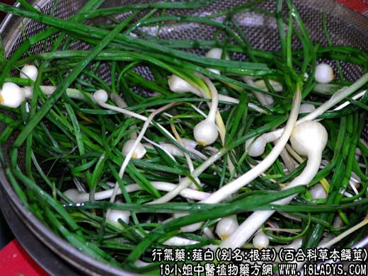
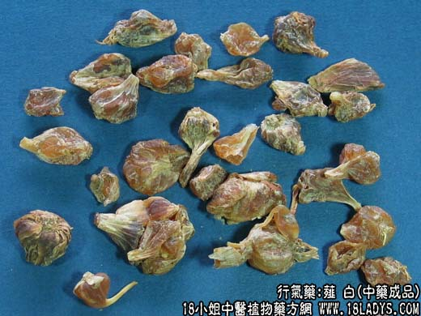
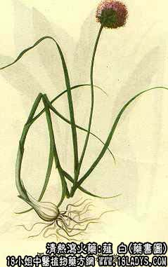

薤白为较常用中药。始载《名医别录》，列为中品。
别名：夕白。
来源：为百合科多年生草本薤或小跟蒜的用沸水煮过或蒸后干燥的鳞茎。均为野生。
产地：主产于江苏、浙江、湖北等省，其它各地亦大部分有产。
性状鉴别：鳞茎鲜时似小蒜头但不分瓣。商品呈不规则的圆形，大小不一，直径约0.5~1.5厘米，表面黄白色或黄棕色，有皱纹。有时外面具数层有纹理的膜质鳞片，揉之易脱。质坚硬，角质半透明。具强烈的蒜臭，嚼之粘牙。以黄白色，粒大，半透明，无鳞叶者为佳。
主要成分：含挥发油。
药理作用：行气止痛。其作用原理现代还甚少研究。按薤白为葱蒜属植物，该属植物有类似芥子的作用，欧洲民间过去常用该属植物缓解肺部炎症引起的刺激症状（如胸痛）；又实验证明口服葱蒜的提出物后，平滑肌的反应先是短暂兴奋，继而抑制。这两点资料对于理解薤白治疗胸痹（胸膜炎、心绞痛）何以有效，可能有一定帮助。
炮制：生用。
性味：辛、苦、温。
归经：入肺、大肠经。
功能：开胸痹、导痰壅，散结满，止疼痛。
主治：胸部闷痛，咳嗽气喘，冷痢后重等症。
临床应用：为治疗胸痹的常用药。所谓胸痹，主要是由于心脉血滞，以致胸阳不运而引起，表现为胸中觉痞满阻塞不畅，胸背部有刺痛，或前后牵引痛，或牵涉至胸膈或胁下作痛，并常有气促、喘息、从现代医学观点看，“阳”一般代表功能，胸阳不运就是胸部血液循环功能阻滞的意思。现已明了，胸痹证常见于心绞痛，其发病确与冠状动脉供血不足或阻塞有关。此外干性胸膜炎、肋间神经痛所见的胸痛也属于胸痹。
如属冠状动脉硬化性心脏病的心绞痛，可和栝萎薤白半夏汤配其他理气活血药治疗。据现代初步观察，按此法治疗数目，多数病例症状显著改善。
如属胸膜炎，则用枳实栝萎白散，再加种连或黄芩，加强行气宽胸和清热作用。
对于由内伤气团，例如由肩挑或搬运重物过度憋气用力引起的前胸翳闷，也可用栝萎薤白半夏汤行气而舒解胸闷。
此外，薤白还可以治胃肠湿滞、泻痢，有醒脾助消化和止泻作用。
使用注意：服用过多对胃粘膜有刺激，溃疡病者不宜长用。又平素胃气虚寒者，服薤白后往往发生噫气，也不宜多用。
用量：9~18g。